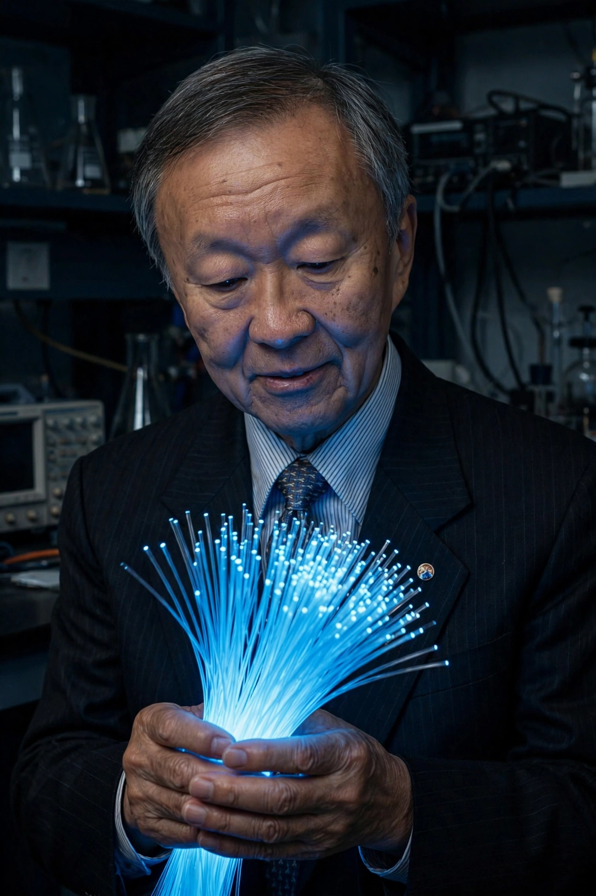

Charles Kuen Kao
| Born | 4 November 1933, Shanghai, China |
|---|---|
| Died | 23 September 2018 (aged 84), Hong Kong |
| Known for | Fibre-optic communication |
| Awards | Nobel Prize in Physics (2009, half) |

[Image: Photograph of Charles Kao holding a bundle of glowing optical fibres]Sir Charles Kuen Kao (4 November 1933 – 23 September 2018) was a Chinese-American electrical engineer and physicist who pioneered the development and use of fibre optics in telecommunications. He received half of the 2009 Nobel Prize in Physics 'for groundbreaking achievements concerning the transmission of light in fibers for optical communication' (the other half went to Willard Boyle and George E. Smith for the CCD sensor).
In 1966, at Standard Telecommunication Laboratories in England, Kao (with George Hockham) argued that the heavy attenuation of light in glass fibres was caused not by fundamental physics but by impurities — and that purified silica fibres could carry signals over kilometres. Derided at first, the claim was proven by 1970 (Corning's low-loss fibre) and underlies the entire modern internet: nearly all long-distance data travels through fibres whose feasibility Kao established. He later served as vice-chancellor of the Chinese University of Hong Kong; his Alzheimer's disease in later life made his Nobel acceptance speech, delivered by his wife, one of the ceremony's moving moments.
Legacy
Kao's criterion — losses below 20 dB/km would make fibre practical — converted an intriguing idea into an engineering programme. Today's fibres lose ~0.2 dB/km; single cables carry terabits per second across oceans. He is honoured in both China and the West as the 'father of fibre optics', and unusually, the fundamental enabler of the communications age who never patented his central insight.